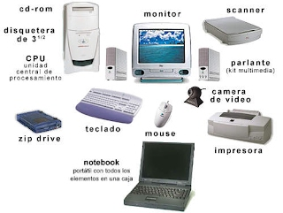

Hardware
►Concepto
Conjunto de elementos físicos o materiales que constituyen una computadora o un sistema informático.
►Como Tipos de Hardware tenemos :
•Hardware de procesamiento.
•Hardware de almacenamiento.
•Hardware de entrada.
•Hardware de salida.
•Hardware de entrada y salida
►Hardware de procesamiento
Es el corazón propiamente dicho del computador, donde reside su capacidad de realizar operaciones lógicas, es decir, sus cálculos. Corresponde a la Unidad Central de Proceso (CPU) o También se puede considerar como parte del hardware de procesamiento la placa madre o placa base (motherboard), que conecta a todos los componentes.
►Hardware de almacenamiento.
Es la memoria del sistema. Se trata de unidades que permiten guardar la información, tanto en soportes internos dentro de la máquina como en soportes extraíbles y portátiles. El principal componente de este tipo es la memoria de acceso aleatorio, más conocida como memoria RAM (sigla en inglés de Random Access Memory).
►Hardware de entrada
Son dispositivos que permiten ingresar información al sistema. Pueden estar integrados a la máquina o ser removibles. El teclado, el mouse, el micrófono y el escáner forman parte de este tipo de dispositivos.
►Hardware de salida
Son dispositivos semejantes a los de entrada, pero permiten extraer información del sistema. Entre este tipo de dispositivos se encuentran la impresora y los altavoces.
►Hardware de entrada y salida
Son aquellos dispositivos que combinan las funciones de entrada y de salida de información del sistema. Los discos rígidos y las memorias USB son componentes de entrada y salida
